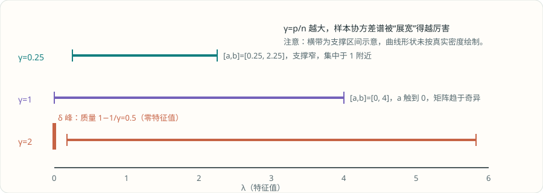
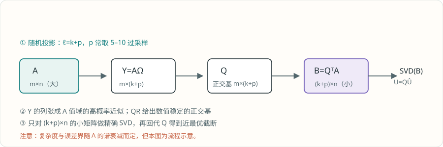

01 / 矩阵为什么可以看成随机变量？
取一个 n×n 矩阵，每个元素都独立地随机取值。你也许以为它的 n 个特征值同样杂乱无章。Wigner 在 1955 年给出相反的结论：当 n 很大时，特征值的经验分布收敛到一个固定的、确定性的形状——半圆。随机性在极限下变成了确定性。
先把对象写清楚。以下三类矩阵性质不同，不能混为一谈：
- 实对称 Wigner 矩阵：
M∈R^{n×n}，M=Mᵀ，上三角元素独立。实对称矩阵特征值全为实数，因此谱是R上的一条概率分布。 - 复 Hermite 矩阵：
M∈C^{n×n}，M=M*（共轭转置），同样有实特征值。实对称是 Hermite 的实特例，但两者的涨落普适类不同（见 Tracy–Widom 一节的β）。 - Wishart / 样本协方差矩阵：先取矩形数据矩阵
X∈R^{n×p}，再构造方阵S=XᵀX/n（p×p）。这里S半正定、特征值非负，谱分布落在[0,∞)。
n×n 随机矩阵的最大特征值量级是 √n，谱会随 n 无限展宽。半圆律等结论都要求先把矩阵归一化，例如 M=X/√n。本文所有极限分布都默认使用这样的归一化。随机矩阵理论（Random Matrix Theory, RMT）研究的就是这些经验谱的极限形状与涨落。本章回答三个层次的问题：整体的谱长什么样（半圆律、Marčenko–Pastur 律），边缘的涨落服从什么（Tracy–Widom），以及这些结论在什么前提下成立。
n→∞、矩条件、独立性等）。本文复述已发表的极限结论，并在图中把示意与真实数据区分标注。02 / Wigner 半圆律
Wigner（1955）考虑归一化实对称矩阵 M=X/√n，其中 X∈R^{n×n} 对称、上三角元素独立同分布、均值为 0、方差为 1。当 n→∞ 时，M 的特征值经验分布几乎必然收敛到半圆分布：
密度支撑在 [−2,2]，在 λ=0 处取最大值 1/π≈0.318，在两端趋于 0。收敛不需要 X_{ij} 服从某种特定分布——只要均值和有限方差固定，极限形状不变，这称为普适性（universality）：极限谱分布只依赖矩的阶数，不依赖分布的具体形式。
n 增大时轮廓从带涨落的经验曲线（红虚线）收敛到光滑半圆（青实线）。可验证观察： 半圆在 λ=±2 处降到 0、在 λ=0 处最高；换成均匀分布、伯努利分布或其它有限方差分布，极限曲线不变。图中经验轮廓为示意，未按特定样本绘制。[−2,2]，才使直方图趋于光滑。03 / Marčenko–Pastur 律
半圆律针对方阵（对称矩阵）；矩形数据矩阵的主场是样本协方差。取 X∈R^{n×p}，元素独立同分布、均值为 0、方差为 1，令 Wishart 矩阵 S=XᵀX/n。当 n,p→∞ 且比值 p/n→γ∈(0,∞) 时，S 的特征值分布收敛到 Marčenko–Pastur（MP）分布：
形状随 γ 明显变化：γ≪1（样本远多于特征）时支撑窄、集中于 1 附近；γ→1 时下端点 a→0；γ>1 时矩阵秩亏，除连续部分外还在 λ=0 处出现质量 1−1/γ 的 δ 峰。

γ=p/n 越大，样本协方差的谱被“展宽”得越厉害：支撑 [a,b] 变宽，且当 γ>1 时在 λ=0 处出现质量 1−1/γ 的 δ 峰。可验证观察： 三个区间都关于 1 对称地对称伸缩，即 a+b=2(1+γ)；γ=1 时下端点恰为 0。横带为支撑区间示意，曲线形状未按真实密度绘制。对高维统计的后果很直接：当 p 与 n 同量级时，样本协方差矩阵的特征值被 MP 律“展宽”，即使真实总体谱只有一个尖峰，样本谱也会铺开成一个区间。传统 PCA 在此时给出严重偏差，需要显式校正（如 Johnstone 的 spiked 模型，精确量出峰值分离所需的最小信号强度）。
04 / Tracy–Widom 边缘涨落
半圆律讲的是谱的整体形状；若只盯住最大特征值 λmax，它的涨落服从另一类普适律。Tracy 与 Widom（1994）证明，归一化 Wigner 矩阵的最大特征值（适当缩放后）依分布收敛到 Tracy–Widom 分布：
这里的 2 是半圆右端点，n^{2/3} 是边缘处的典型涨落尺度：波动幅度随 n 以 n^{−2/3} 收缩，比中心区域的 n^{−1/2} 慢，因此边缘“更敏感”。参数 β 依赖对称性：β=1 对应实对称（GOE），β=2 对应复 Hermite（GUE），β=4 对应四元数自共轭系综（GSE）。这与第 10、11 章的谱分解共用同一套特征值语言，只是这里矩阵是随机的。
β=1,2,4。不同样本量、不同系综下的精确分位数不同，不能直接混用。05 / 随机矩阵系综总览
“系综”指一族带指定对称性与元素分布的随机矩阵。对称性决定元素之间哪些可以独立，也决定极限谱与边缘涨落属于哪个普适类。
| 系综 | 矩阵类型 | 独立元素（常用归一化） | 极限谱 | 典型场景 |
|---|---|---|---|---|
| GOE | 实对称 | H=(X+Xᵀ)/√2，X_{ij}~N(0,1)：对角 N(0,2)，非对角 N(0,1) | Wigner 半圆 | 原子核能级、量子混沌 |
| GUE | 复 Hermite | 对角元实高斯；非对角元复高斯，实、虚部独立同分布 | Wigner 半圆 | 量子输运、量子色动力学 |
| Wishart / Laguerre | S=XᵀX/n，X∈R^{n×p} | 由 X_{ij}~N(0,1) 诱导；γ=p/n | Marčenko–Pastur | 高维统计、PCA、协方差估计 |
| Manova / Jacobi | (A+B)^{−1/2}A(A+B)^{−1/2} | 两个独立 Wishart 矩阵之比 | Jacobi / Wachter | 多元统计、分类分析 |
β=1 与 β=2）。非对角方差的常数取决于归一化约定；上表 GOE 采用使半圆半径恰为 2 的约定。β 类还包含四元数的 β=4（GSE），表中不展开。06 / 随机 SVD：用随机投影加速大规模分解
当 A 大到连精确 SVD 都无法容纳时，随机化算法用随机投影先把问题降到低维。思路只用两步：先用少量随机方向“探”出 A 的值域，再在这个低维子空间里做一次便宜而精确的 SVD。

ℓ=k+p（p 常取 5–10）。可验证观察： 只对 ℓ×n 的小矩阵 B 做精确 SVD，最终左奇异向量由 U=QÛ 回代得到，与直接对 A 做 SVD 得到的截断结果高度一致。- 取随机测试矩阵
Ω∈R^{n×ℓ}； - 计算
Y=AΩ（m×ℓ），列张成A值域的高概率近似； - 对
Y作 QR 分解得正交基Q（m×ℓ）； - 形成小矩阵
B=QᵀA（ℓ×n）； - 对
B作精确 SVDB=ÛΣVᵀ，令U=QÛ。
主要开销是两次与 A 的乘法 O(mnℓ)，加上对小矩阵的分解 O((m+n)ℓ²)。当 ℓ≪min(m,n) 时，这远低于精确 SVD 的代价。Halko、Martinsson 与 Tropp（2011）证明：在过采样 p≥2 下，其期望逼近误差可控制在最优 rank-k 误差的常数倍以内，常数随 p 减小、随 k 增大；当 A 的奇异值快速衰减时尤为准确。
Q 无法捕获全部主要方向，需要多轮幂迭代（Y=(AAᵀ)^q AΩ）以放大主方向，代价是额外乘法与精度损失。过采样 p 不是越大越好：它增加每步成本，且保证只对低维 B 成立。07 / RMT 与深度学习：三种已发表的联系
随机矩阵理论在深度学习中的引用主要在三个层面，它们各自的前提不同，不宜混为一谈。
- 初始化与信号方差： Xavier/Glorot 初始化通过选择权值方差，使前向传播中各层激活近似保持方差不变，反向时梯度方差也保持稳定（Glorot & Bengio, 2010）。这是关于逐层方差传播的工程惯例，而不是“权值谱恰好服从 MP 律”的断言。
- 无限宽极限与核： 当隐藏层宽度趋于无穷时，神经网络训练可用神缀切核（NTK）描述，其核矩阵的特征谱决定学习动力学（Jacot 等, 2018）。后续工作用随机矩阵工具分析这些核的谱，解释某些架构为何学得更快。
- 双下降现象： 当参数量接近或超过样本量时，测试误差随模型复杂度出现“先升后降”的峰值（Belkin 等, 2019）。经验协方差矩阵在过参数区间出现接近零的特征值、条件数急剧恶化，是解释该现象的一类思路；机制仍有争议。
另一个具体应用是注意力矩阵的谱诊断：当重复应用注意力时，其行空间的秩会随深度下降（Dong、Cordonnier 与 Loukas, 2021），可用谱的退化来刻画。RMT 在此提供的是基线与零假设，而不是直接给出剪枝方案。
08 / 可复算算例：密度公式与 MP 支撑端点
下面只用 Python 标准库，对两个极限密度的公式做数值核对：半圆密度在 λ=0 处的值应为 1/π、在端点 λ=±2 处为 0；MP 支撑端点由 γ 唯一确定。
import math
rho = lambda lam: math.sqrt(4 - lam*lam) / (2*math.pi) # Wigner 半圆密度
print("rho0=%.5f rho1=%.5f rho2=%.5f" % (rho(0.0), rho(1.0), rho(2.0)))
g = 0.5; s = math.sqrt(g) # MP 端点 a,b
print("gamma=0.5: a=%.5f b=%.5f" % ((1-s)**2, (1+s)**2))预期输出：rho0=0.31831 rho1=0.27566 rho2=0.00000 与 gamma=0.5: a=0.08579 b=2.91421。核对要点： 1/π≈0.31831，端点处密度为 0；a+b=3.0=2(1+γ)。失败模式： 若漏掉分母 2π，最大值会变成 2；若在 |λ|>2 代入会得到负数开方而报错；若忘记对 γ 开方就代入端点公式，a,b 都会偏大。
该控件在 γ=0.2…2.0 上给出支撑 [a,b]：当 γ>1 时额外提示 λ=0 处质量 1−1/γ 的 δ 峰。默认状态无需脚本即可读出；键盘方向键可调 γ。
参考与延伸阅读
- Wigner, Characteristic vectors of bordered matrices with infinite dimensions, Ann. Math., 1955：半圆律
- Marčenko & Pastur, Distribution of eigenvalues for some sets of random matrices, 1967：MP 律
- Tracy & Widom, Level-spacing distributions and the Airy kernel, Comm. Math. Phys., 1994：边缘涨落
- Johnstone, On the distribution of the largest eigenvalue in PCA, Ann. Statist., 2001：spiked 模型
- Halko, Martinsson & Tropp, Finding structure with randomness, SIAM Review, 2011：随机 SVD
- Glorot & Bengio, Understanding the difficulty of training deep feedforward neural networks, AISTATS, 2010：初始化与信号方差
- Jacot, Gabriel & Hongler, Neural Tangent Kernel, NeurIPS, 2018
- Belkin, Hsu, Ma & Mandal, Reconciling modern machine learning practice and the bias–variance trade-off, PNAS, 2019：双下降
- Dong, Cordonnier & Loukas, Attention is not all you need, 2021：注意力秩退化
- MIT 18.065 Matrix Methods：随机矩阵与高维统计的应用背景
半圆律、MP 律、Tracy–Widom 边缘律与随机 SVD 误差界均转述自上述原始文献，本页不重证；算例为本页构造的确定性数值核对。密度端点常数与元素方差具有归一化约定依赖，已在表中注明。极限谱的“示意图”与真实样本直方图已在图注区分。
本章为概念导引，未展开自由概率、乘性卷积与谱边缘的完整证明；需要严格推导时请直接阅读 Wigner（1955）与 Marčenko–Pastur（1967）。